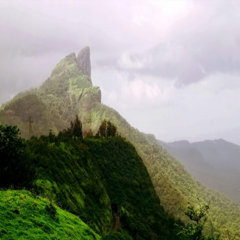
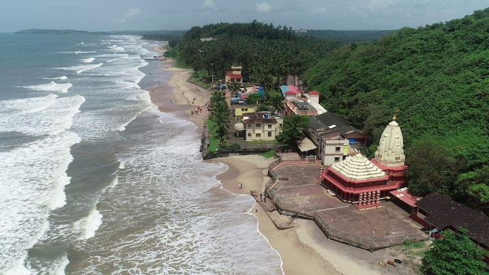
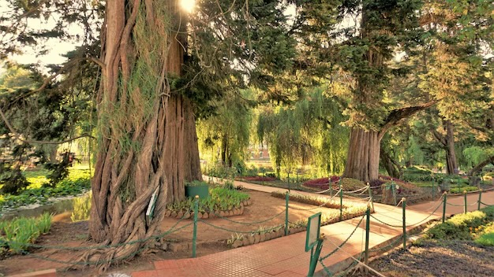
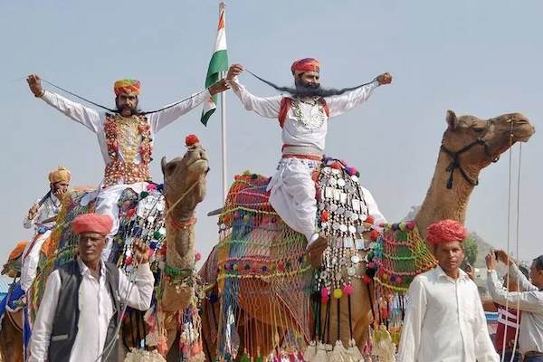

Lonavala, a picturesque hill station in the Sahyadri Range of the Western Ghats in Maharashtra, is a popular destination for nature lovers and adventure seekers. This charming town is renowned for its lush greenery, serene lakes, and beautiful viewpoints. There are various places to visit here. Some of them include - Rajmachi, a hidden gem in the Sahyadri Mountains, offers nature enthusiasts and history buffs a captivating escape. Tiger's Leap, a breathtaking viewpoint which got its name from its resemblance to a leaping tiger, and its panoramic views are equally thrilling. Perched on the edge of a cliff, visitors can witness the stunning Western Ghats, lush valleys, and gushing waterfalls below. Karla Caves, a marvel of ancient rock-cut architecture, beckons travellers to explore India's rich heritage. Nestled in the lush hills of Lonavala, these Buddhist caves date back to around the 2nd century BC. The picture below is of Duke's nose valley, a cliff at Khandala near Lonavala. This is a marvelous trekking spot nearby Lonavala. One Hour walk takes you to the top of Duke's nose. Valley crossing from Dukes Nose to Duchess Nose is a great fun due to roaring winds, Foggy atmosphere & of course Deep Valley. Duke's nose gets its name because it resembles the nose of the Duke of Wellington. In Hindi it is named Nagphani(snake's hood), as it resembles the hood of Snake.
Ganpatipule is a town on the Konkan Coast of western India. It's known for its beaches, such as Ganpatipule Beach and nearby Aare Ware Beach. On Ganpatipule Beach, the centuries-old Swayambhu Ganpati Temple is a pilgrimage site and houses a large orange statue of Ganesh. Prachin Konkan is an open-air museum with models depicting traditional Konkan life. Jaigad Fort and a British-built lighthouse lie to the north.
Ooty (short for Udhagamandalam) is a resort town in the Western Ghats mountains, in southern India's Tamil Nadu state. Founded as a British Raj summer resort, it retains a working steam railway line. Below is the image of The Botanical Gardens which was established in the year 1847 by Marquis of Tweedale but was the brain child of the architect, McIvor. It is situated on the hill locks of Ooty and is home to the rare paper bark tree, 20 million old fossil tree, the monkey puzzle tree and more. The Gardens are now, under supervision of the Government and the Horticulture Department. One of the most exiting features of the Botanical Garden is the “Annual Flower Show” that takes place in the month of May. A large number of people from the country and abroad, visit the location to witness the striking assortment of plant life.
Rajasthan is the enchanting land of royal and rich cultural heritage. the place is filled with royal history adventurefascinating culture. Some of the best places to visit here are - Jaisalmer, known as the "Golden city" boasts mesmerizing sand dunes, majestic forts, and intricate havelis, offering a timeless experience of desert charm. Jaipur, the "Pink city" of India impresses with its royal palaces, bustling bazaar, vibrant culture, showcasing the perfect blend of tradition and modernity. The Pushkar Fair, also called the Pushkar Camel Fair or locally as Kartik Mela or Pushkar ka Mela is an annual multi-day livestock fair and cultural fête held in the town of Pushkar near Ajmer city in Ajmer district in (Rajasthan, India). The fair starts with the Hindu calendar month of Kartik and ends on the Kartik Purnima, which typically overlaps with late October and early November in the Gregorian calendar. It is visited by lakhs of visitors throughout the year.
